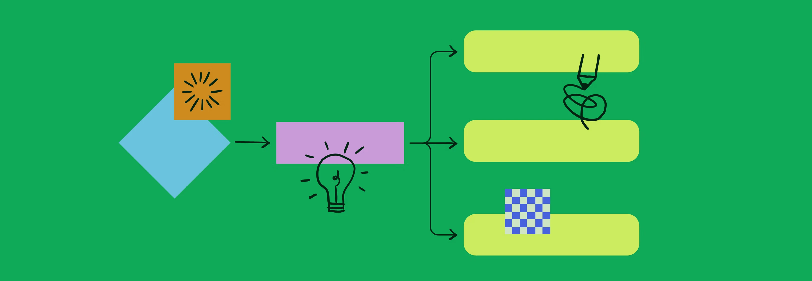
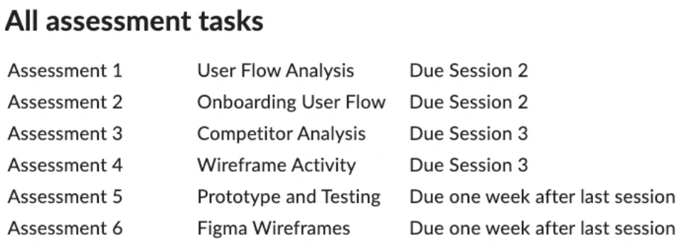
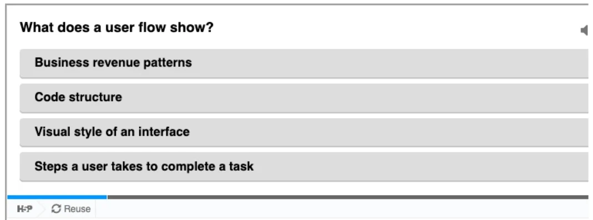
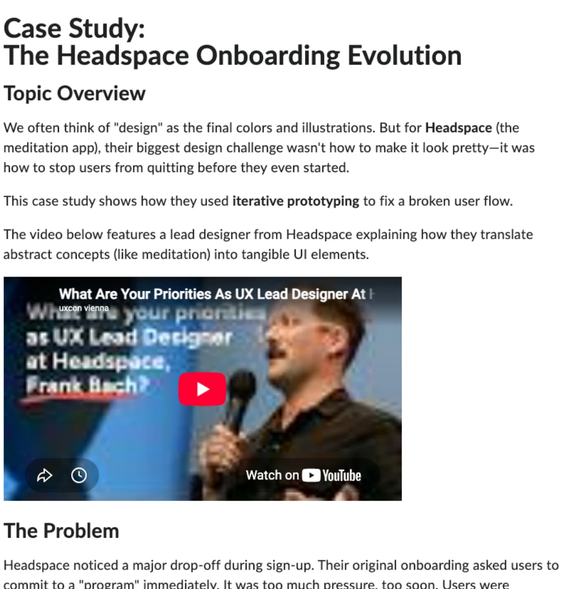

A blended six-hour unit teaching adult UX learners to map user flows, evaluate onboarding experiences, and translate findings into low-fidelity wireframes. Designed, written, and built end-to-end in D2L Brightspace, across in-person, synchronous online, and self-paced delivery.
The complete working unit, recreated outside the university LMS. Every page, activity, and knowledge check is explorable.
Before designing anything, I evaluated existing university LMS spaces against structured criteria across six categories: ease of use, content quality, design and aesthetics, assessment and feedback, motivation and engagement, and outcomes. The pattern was familiar to anyone who has studied online. Content sat sometimes on the page and sometimes behind a link to a separate page, forcing a constant click-out-read-navigate-back loop that my evaluation notes described as "really tiring and confusing." Assessment information was duplicated across areas and written differently in each, so working out what to actually do meant cross-referencing. Searching "assessment" surfaced a page about Zoom. Heading text failed W3C contrast standards, and nothing worked on mobile.
None of this is unusual. It is the default state of link-heavy Blackboard and D2L course sites, where every extra link fragments attention and buries the information students need most. The design challenge: build a unit that teaches user flows and usability heuristics inside that same LMS, without committing the sins it teaches students to spot.
"The content is sometimes on the page and sometimes you have to click a link to access a separate page to read the content, then navigate back, which gets really tiring and confusing. … Because the assessment content is found in multiple places, it was difficult to work out what to do."
The unit moves learners through three two-hour sessions, each in the delivery mode that suits its cognitive work: foundations and group flow-mapping in person, collaborative heuristic evaluation live online, and independent wireframe creation self-paced. Three learning objectives climb Bloom's taxonomy from Apply to Evaluate to Create, and all three converge on one authentic project: designing the onboarding flow for NSURE, a fictional insurance app, exactly as a junior designer would in practice.
Every structural decision answers a failure mode from the evaluation. Content lives on the page in progressive-disclosure accordions, so learners scan a session at a glance and expand only what they need, with no link-hopping. Assessment has one canonical home: a single table lists all six tasks with due dates, and each task page appears exactly once, inside the topic it belongs to. Every session follows the same predictable pattern, so learners spend their attention on the content rather than the interface.
Flow symbols, logic, and error paths. Learners map a real checkout process, then chart the NSURE onboarding journey in groups. Outcome: accurate user-flow diagrams with explained logic (LO1).
Nielsen's heuristics applied in breakout workshops, then a structured analysis of direct and indirect competitors. Outcome: evaluated interfaces and patterns to inform wireframes (LO2).
Wireframing principles, screen planning, and annotated low-fidelity wireframes uploaded for assessment, with a mandatory reflection journal. Outcome: wireframes meeting usability and accessibility criteria (LO3).



Every topic overview, lesson list, and activity brief is readable in place, with accordions providing progressive disclosure instead of separate pages. Each click a course demands is a cost; the evaluation showed how quickly those costs compound into frustration. Reducing them is the same discipline the unit teaches for onboarding flows.
Each learning objective is pitched at a named Bloom's level and assessed by the same integrated project, following Biggs and Tang's constructive alignment. Nothing is assessed that isn't taught, and nothing is taught that doesn't feed the final artefact: an annotated wireframe set for the NSURE onboarding flow.
In-person time is spent where dialogue and error-spotting matter most, live online sessions power collaborative evaluation in breakouts, and creation happens self-paced where learners control their tools and tempo. The blend follows Kolb's experiential cycle rather than distributing content evenly across modes for its own sake.
The curriculum design document specifies every session down to timed activities with paired student and educator instructions. Its spine is three objectives, each with a Bloom's level and a direct line to the assessment criteria.
| Learning objective | Bloom's level | Assessed by |
|---|---|---|
| Explain and apply user-flow principles to model user journeys within digital products. | Apply | Accuracy and clarity of user-flow logic in the NSURE onboarding flow. |
| Evaluate onboarding experiences using usability heuristics and competitor analysis. | Evaluate | Application of heuristics and competitive insight in the structured analysis. |
| Design and annotate low-fidelity wireframes that demonstrate clear structure, logic, and accessibility. | Create | Completeness and annotation quality of the final wireframe set. |
Accessibility ran through the build rather than being retrofitted: plain language, alt text on every image, captioned video, colour contrast checked, downloadable text versions of activities, and keyboard-navigable quizzes.
Structured evaluation of live LMS spaces against criteria spanning ease of use, content quality, aesthetics, assessment, engagement, and outcomes. The documented failure modes became design requirements for the new unit.
Objectives, assessment, and three full lesson plans with timed activities, paired student and educator instructions, and development resources. Grounded in constructive alignment (Biggs & Tang), adult learning principles (Knowles), and active learning (Laurillard).
Full unit authored in a D2L sandpit: module and topic architecture, session pages with progressive disclosure, H5P knowledge checks, templates and activity pages, and the Headspace case study with embedded video.
The draft curriculum document went through structured peer review in FeedbackFruits. Feedback identified content repeated across session mini-lectures and flagged that the reflection activity, as an optional task, was likely to be skipped.
Repeated content was streamlined so sessions build progressively without overlap, the reflection journal became mandatory to support metacognition, and accessibility coverage expanded to captioned media and clearly labelled downloads. Each change is documented against the feedback that prompted it.
The unit design draws on Kolb's experiential learning cycle, Laurillard's active learning, Knowles' adult learning principles, and Biggs and Tang's constructive alignment, with Nielsen's usability heuristics doing double duty as both subject matter and design standard for the unit itself.
The complete unit was built and is explorable above: three sessions, twenty-nine topic pages, six aligned assessment tasks, embedded knowledge checks, and a real-world case study. The design was validated through structured peer review, with every piece of feedback actioned and documented before the final build.
Delivered live, evaluation would track completion of the mandatory reflections, quiz performance against the 80% threshold, and the quality of submitted wireframe artefacts against the marking criteria, then follow up on whether learners apply flow-mapping and heuristic evaluation in their own work.
The evaluation-first approach earned its keep: designing against documented failure modes produced sharper decisions than designing from preference. Two things I would change. I would pilot the unit with a real cohort early, because assumptions about activity timing survive peer review but rarely survive learners. And I would design social engagement into assessed activities from the start; the evaluation showed that discussion forums go unused unless participation matters, so relying on optional forum posts, even lightly, was optimism the evidence didn't support.